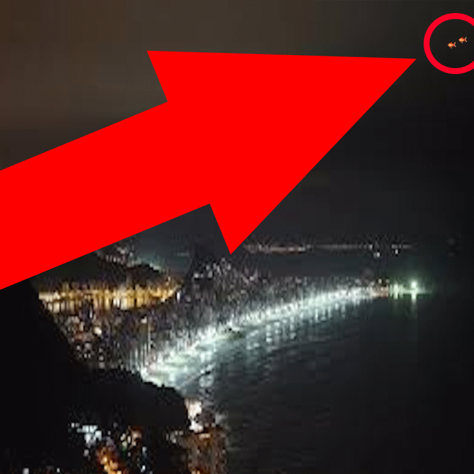

IF YOU FOUND THIS YOU'RE PART OF THE CLUB.
HERE I PUT MY PICTURES OF FISHES IN THE SPACE, FOR THE SPACEFISH CLUB.
THOSE ALIEN FISHER ARE EVERYWERE, THEY'RE OBSERVING US AND THEY WANT US DEAD.

THE SPACE FISHES
it's been a while since i saw my first fish in the space, here's the picture of it.
CAN YOU SEE IT? NO?? SO LOOK AT THIS

NOW YOU CAN SEE IT?? YEAH THIS IS REAL I SAW IT.
well, if you don't belive me, wait till my next updates... bye for now
spacefisher413 out
.